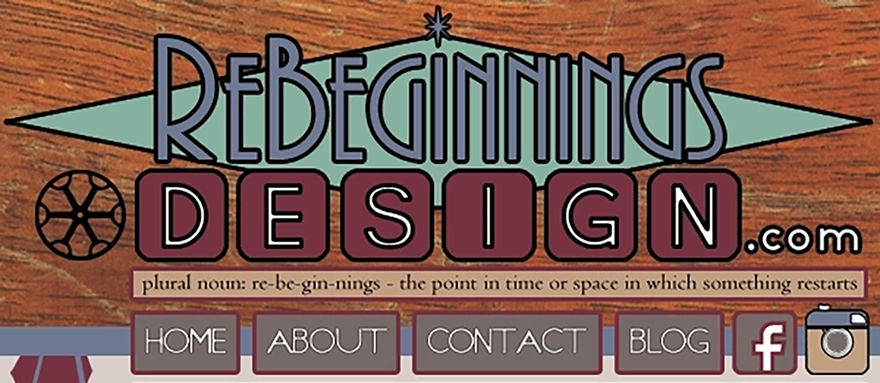
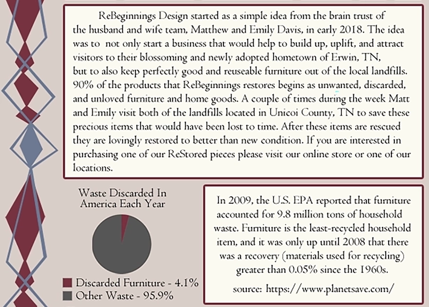
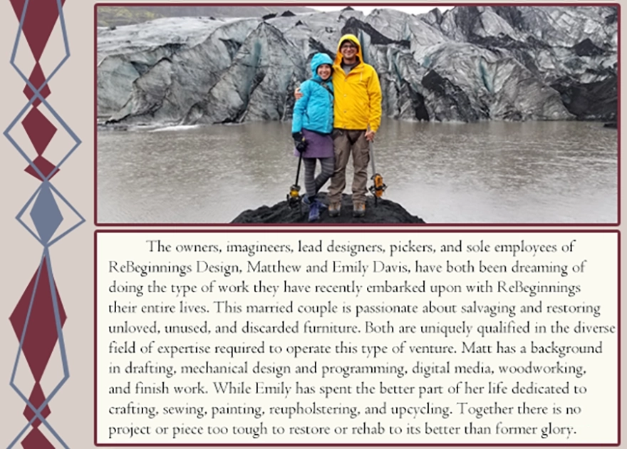
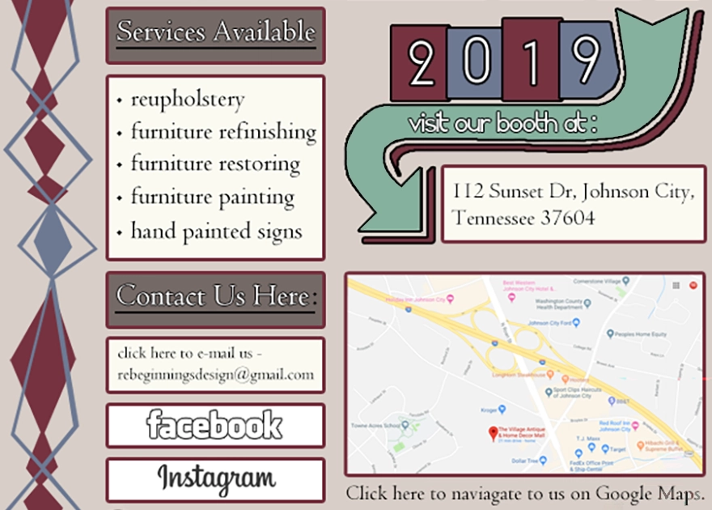
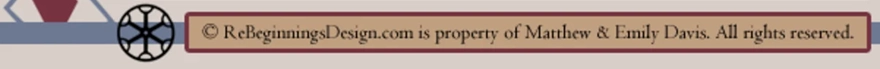

Matthew A. Davis, MBA
Operations & Corporate Development · Systems Design · Strategic Communications · Independent R&D

ReBeginningsDesign.com · 2018 — 2019
ReBeginnings Design
Emily and I started ReBeginnings Design in 2018 to rescue and restore furniture that would otherwise have ended up in a landfill. Most of what we worked on began as discarded pieces collected locally in Northeast Tennessee, then rebuilt, repaired, refinished, reupholstered, or repurposed into something useful again.
Everything shown here is original: the wordmark, compass mark, diamond-rail motif, and color palette drawn directly from the wood itself. Like the furniture we restored, the site was built by hand.
The entire site was fixed at 601 pixels wide. It was designed on the assumption that visitors arrived from a desktop computer, a completely reasonable decision right up until it wasn’t.




